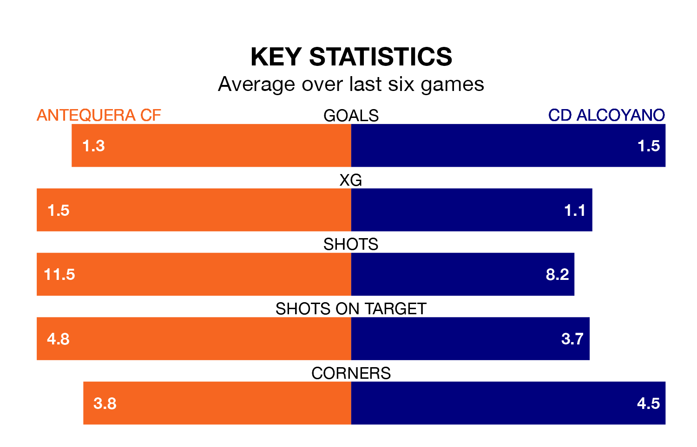

Antequera CF host CD Alcoyano on Saturday at the Estadio El Maulí in Primera Division RFEF Group 2.
In their last league match, on Sunday, Antequera lost to Intercity 2-1 away, with their goal scored by Jesús Alba Ramos.
Alcoyano drew, 1-1 at home against CD Atlético Baleares, with Juan Antonio Casanova Vidal scoring their goals.
In Luis Miguel Redondo Fernandez, Antequera have one of the league's most on-form strikers so far this season. He has notched 10 goals in 23 appearances, to sit second in the scoring charts.
His goal rate of one every 197 minutes is quicker than that of Imanol García Lugea, Alcoyano's top scorer with a goal every 364 minutes, and a total of four goals in 21 games.
With 35 goals in 29 games so far this season, the home side are scoring more than average in the league with 1.2 goals per game. But they are conceding more than average too, letting in 36 goals at a rate of 1.2 per game.
The visitors, meanwhile, are average scorers, with 1.1 goals per game. They have conceded 1.0 goal per game.
Antequera are in mixed form in Primera Division RFEF Group 2, with two wins and two draws from their last six games.
With three wins and two draws over that period, Alcoyano's form is better – they have taken 11 points from 18, compared to Antequera's eight.
The hosts are 11th in the table after 29 games, of which they have won 11 and drawn seven, earning 40 points.
Alcoyano are one place ahead of Antequera in 10th, with 11 wins and seven draws putting them on the same number of points.
Updated: 12:16 (UTC), 25/03/24